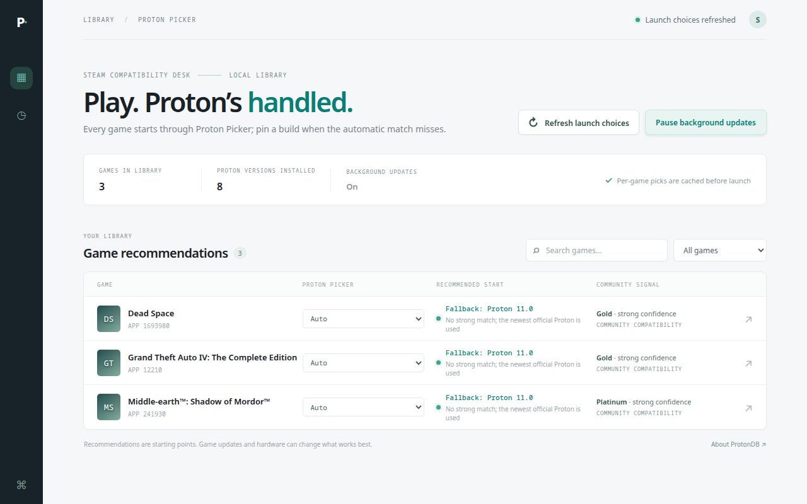

Why Steam Proton settings get messy
Steam's global compatibility tool applies to every Windows game without its
own override. Per-game overrides work, but they live inside
config.vdf, which Steam rewrites when it exits. If you move a
library, reinstall a Proton build, or clean up settings, those mappings can
disappear — and the game silently falls back to a build you did not choose.
Proton Picker moves routing out of Steam's per-game settings. Steam sees one compatibility tool. That tool decides which Proton binary to execute for the app ID being launched, and keeps a ranked list of alternatives.
How routing works
- Pin: if you pinned a build for that app ID in the dashboard, use it.
- Recommendation: otherwise use the strongest verified build for that game from public compatibility reports.
- Fallback: otherwise use the newest installed official Proton, then older official builds, then the experimental channel, then community builds.
The fallback list is written as paths. Missing or unmounted builds are skipped, and the launcher exits with code 126 rather than starting a build that does not exist.

Install
Download and extract the alpha archive, close Steam, then run:
./install.shThe installer places the compatibility tool in Steam, sets it as the global
compatibility tool, and asks whether to remove existing per-game overrides.
The default is yes; the config is backed up first and removed mappings are
recorded so uninstall.py can restore them.
config.vdf on exit and can undo changes made while it is running.Common problems
Steam ignores my per-game Proton choice
Remove the override and let Proton Picker own routing. Pins live in
~/.config/proton-picker/state.json, not in Steam's config.
A game fails after my games drive is unmounted
The fallback list skips missing paths and scans standard Steam folders. If no usable build exists, the launch fails explicitly instead of guessing.
I want to A/B test a stutter or controller issue
Pin one build, reproduce the issue, then pin another. This isolates the Proton build as a variable. It does not guarantee a fix for game-specific controller or frame-pacing issues.
Full troubleshooting and log paths ↗
Requirements and limits
- Linux desktop Steam. Steam Deck and Flatpak Steam are not validated in this alpha.
- Python 3.10 or newer and at least one Proton build installed in Steam.
- Recommendations are starting points from public reports, not guarantees.
- GTA IV controller and Dead Space stutter are diagnostic paths, not claimed fixes.
- Proprietary freeware license. Source is published for inspection; reuse and resale are not permitted.